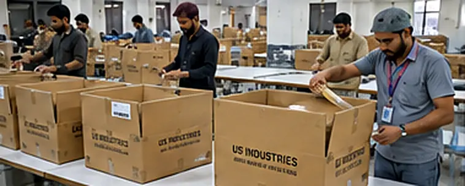

One path from your first message to a packed, labelled carton, with every stage under one roof.
Departments
Ten departments. One roof.
From yarn to export carton, every stage runs in our own facility in Karachi.
Photography to come
Yarn cones racked by count and lot
01
Yarn Warehouse
Yarn received, checked and stored by count, composition and lot.
Photography to come
Circular knitting machines running jersey
02
Knitting
Yarn knitted into single jersey, interlock, French terry, fleece, rib and thermal.
03
Dyeing
Fabric and garment dyeing, with mineral, acid, enzyme and vintage washes.
04
Cutting
Spreading and cutting with precision for accuracy and minimal waste.
05
Printing
Screen, puff, high-density, rubber, discharge, DTG and water-based.
06
Embroidery
Multi-head, chenille, chain stitch, applique, 3D puff and patches.
07
Stitching
200 production machines: lockstitch, overlock, flatlock and multi-needle.
08
Finishing
Thread trimming, pressing, inspection, labelling and packing.
09
Carton Warehouse
Marked export cartons stored safely and loaded for shipment.
Photography to come
Sample room with pattern table and sampling machines
10
Sample Room
Six dedicated machines for development, fit and pre-production samples.
Buyer to shipment
Eight milestones.
Clear checkpoints, so you always know where your order stands and what comes next.
01
Inquiry & tech pack
02
Costing & material plan
03
Sampling & fit
04
PP approval
05
Bulk production
06
Inline QC
07
Final inspection
08
Packing & shipment
On the floor
Twelve stages. One standard.
01
Cutting
Spreading and cutting with precision for accuracy and minimal waste.
02
Printing
Screen, puff, high-density, discharge, DTG and water-based inks.
03
Embroidery
Multi-head, chenille, chain stitch and applique for premium finishes.
04
Sewing
A skilled team on lockstitch, overlock, flatlock and multi-needle machines.
05
Inline QC
Inspections at every stage to hold the standard through bulk.
06
Washing
Garment dye, mineral, enzyme and special effects for the right look and feel.
07
Finishing
Thread trimming, pressing and labelling.
08
Final QC
Random final inspection to AQL standards before release.
09
Folding
Consistent folding for presentation and size accuracy.
10
Packing
Individual polybags with size, colour and barcode stickers to your spec.

11
Carton packing
Export cartons with marking, quantities, size ranges and handling notes.
12
Warehouse & shipment
Finished goods stored safely and loaded for delivery.
Every department, in-house.
Yarn warehouse, knitting, dyeing, cutting, printing, embroidery, stitching, finishing, carton warehouse and sample room all sit within our own facility. Fewer hand-offs mean tighter control over quality, timing and cost.